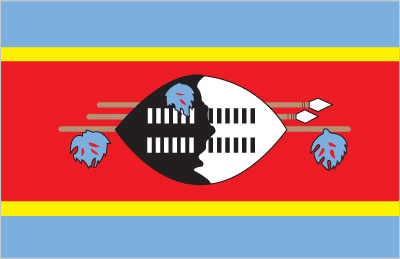
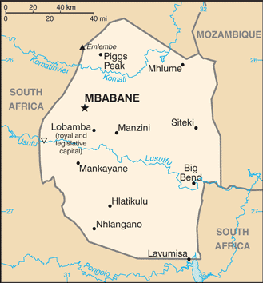
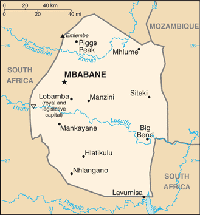
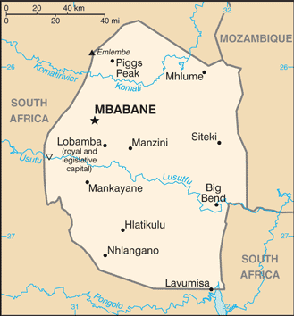

 


Africa :: SWAZILAND
Introduction :: SWAZILAND
-
Autonomy for the Swazis of southern Africa was guaranteed by the British in the late 19th century; independence was granted in 1968. Student and labor unrest during the 1990s pressured King MSWATI III, Africa's last absolute monarch, to grudgingly allow political reform and greater democracy, although he has backslid on these promises in recent years. A constitution came into effect in 2006, but the legal status of political parties was not defined and their status remains unclear. Swaziland has surpassed Botswana as the country with the world's highest known HIV/AIDS prevalence rate.
Geography :: SWAZILAND
-
Southern Africa, between Mozambique and South Africa26 30 S, 31 30 EAfricatotal: 17,364 sq kmland: 17,204 sq kmwater: 160 sq kmcountry comparison to the world: 159slightly smaller than New Jerseytotal: 546 kmborder countries (2): Mozambique 108 km, South Africa 438 km0 km (landlocked)none (landlocked)varies from tropical to near temperatemostly mountains and hills; some moderately sloping plainsmean elevation: 305 melevation extremes: lowest point: Great Usutu River 21 mhighest point: Emlembe 1,862 masbestos, coal, clay, cassiterite, hydropower, forests, small gold and diamond deposits, quarry stone, and talcagricultural land: 68.3%arable land 9.8%; permanent crops 0.8%; permanent pasture 57.7%forest: 31.7%other: 0% (2011 est.)500 sq km (2012)because of its mountainous terrain, the population distribution is uneven throughout the country, concentrating primarily in valleys and plainsdroughtlimited supplies of potable water; wildlife populations being depleted because of excessive hunting; overgrazing; soil degradation; soil erosionparty to: Biodiversity, Climate Change, Climate Change-Kyoto Protocol, Desertification, Endangered Species, Hazardous Wastes, Ozone Layer Protectionsigned, but not ratified: Law of the Sealandlocked; almost completely surrounded by South Africa
People and Society :: SWAZILAND
-
1,467,152note: estimates for this country explicitly take into account the effects of excess mortality due to AIDS; this can result in lower life expectancy, higher infant mortality, higher death rates, lower population growth rates, and changes in the distribution of population by age and sex than would otherwise be expected (July 2017 est.)country comparison to the world: 154noun: Swazi(s)adjective: SwaziAfrican 97%, European 3%English (official, used for government business), siSwati (official)Christian 90% (Zionist - a blend of Christianity and indigenous ancestral worship - 40%, Roman Catholic 20%, other 30% - includes Anglican, Methodist, Mormon, Jehovah's Witness), Muslim 2%, other 8% (includes Baha'i, Buddhist, Hindu, indigenous religionist, Jewish) (2015 est.)Swaziland, a small, predominantly rural, landlocked country surrounded by South Africa and Mozambique, suffers from severe poverty and the world’s highest HIV/AIDS prevalence rate. A weak and deteriorating economy, high unemployment, rapid population growth, and an uneven distribution of resources all combine to worsen already persistent poverty and food insecurity, especially in rural areas. Erratic weather (frequent droughts and intermittent heavy rains and flooding), overuse of small plots, the overgrazing of cattle, and outdated agricultural practices reduce crop yields and further degrade the environment, exacerbating Swaziland’s poverty and subsistence problems. Swaziland’s extremely high HIV/AIDS prevalence rate – more than 28% of adults have the disease – compounds these issues. Agricultural production has declined due to HIV/AIDS, as the illness causes households to lose manpower and to sell livestock and other assets to pay for medicine and funerals.Swazis, mainly men from the country’s rural south, have been migrating to South Africa to work in coal, and later gold, mines since the late 19th century. Although the number of miners abroad has never been high in absolute terms because of Swaziland’s small population, the outflow has had important social and economic repercussions. The peak of mining employment in South Africa occurred during the 1980s. Cross-border movement has accelerated since the 1990s, as increasing unemployment has pushed more Swazis to look for work in South Africa (creating a “brain drain” in the health and educational sectors); southern Swazi men have continued to pursue mining, although the industry has downsized. Women now make up an increasing share of migrants and dominate cross-border trading in handicrafts, using the proceeds to purchase goods back in Swaziland. Much of today’s migration, however, is not work-related but focuses on visits to family and friends, tourism, and shopping.0-14 years: 35.01% (male 259,646/female 253,976)15-24 years: 22.12% (male 164,117/female 160,478)25-54 years: 34.6% (male 264,262/female 243,362)55-64 years: 4.3% (male 25,319/female 37,763)65 years and over: 3.97% (male 22,113/female 36,116) (2017 est.)total dependency ratio: 68.8youth dependency ratio: 63.5elderly dependency ratio: 5.2potential support ratio: 19.1 (2015 est.)total: 21.7 yearsmale: 21.5 yearsfemale: 21.9 years (2017 est.)country comparison to the world: 1811.08% (2017 est.)country comparison to the world: 10224 births/1,000 population (2017 est.)country comparison to the world: 5513.2 deaths/1,000 population (2017 est.)country comparison to the world: 130 migrant(s)/1,000 population (2017 est.)country comparison to the world: 101because of its mountainous terrain, the population distribution is uneven throughout the country, concentrating primarily in valleys and plainsurban population: 21.3% of total population (2017)rate of urbanization: 1.41% annual rate of change (2015-20 est.)MBABANE (capital) 66,000 (2014)at birth: 1.03 male(s)/female0-14 years: 1.02 male(s)/female15-24 years: 1.02 male(s)/female25-54 years: 1.08 male(s)/female55-64 years: 0.66 male(s)/female65 years and over: 0.64 male(s)/femaletotal population: 1 male(s)/female (2016 est.)19.5 yearsnote: median age at first birth among women 25-29 (2006/07 est.)389 deaths/100,000 live births (2015 est.)country comparison to the world: 29total: 48.4 deaths/1,000 live birthsmale: 52.2 deaths/1,000 live birthsfemale: 44.4 deaths/1,000 live births (2017 est.)country comparison to the world: 34total population: 52.1 yearsmale: 52.7 yearsfemale: 51.5 years (2017 est.)country comparison to the world: 2202.69 children born/woman (2017 est.)country comparison to the world: 6866.1% (2014)9.3% of GDP (2014)country comparison to the world: 340.15 physicians/1,000 population (2009)2.1 beds/1,000 population (2011)improved:urban: 93.6% of populationrural: 68.9% of populationtotal: 74.1% of populationunimproved:urban: 6.4% of populationrural: 31.1% of populationtotal: 25.9% of population (2015 est.)improved:urban: 63.1% of populationrural: 56% of populationtotal: 57.5% of populationunimproved:urban: 36.9% of populationrural: 44% of populationtotal: 42.5% of population (2015 est.)27.2% (2016 est.)country comparison to the world: 1220,000 (2016 est.)country comparison to the world: 263,900 (2016 est.)country comparison to the world: 35degree of risk: intermediatefood or waterborne diseases: bacterial diarrhea, hepatitis A, and typhoid fevervectorborne disease: malariawater contact disease: schistosomiasis (2016)16.5% (2016)country comparison to the world: 1245.8% (2014)country comparison to the world: 847.1% of GDP (2014)country comparison to the world: 12definition: age 15 and over can read and writetotal population: 87.5%male: 87.4%female: 87.5% (2015 est.)total: 11 yearsmale: 12 yearsfemale: 11 years (2013)
Government :: SWAZILAND
-
conventional long form: Kingdom of Swazilandconventional short form: Swazilandlocal long form: Umbuso weSwatinilocal short form: eSwatinietymology: "Land of the Swazi" people; the name "Swazi" derives from 19th century King MSWATI II, under whose rule Swazi territory was expanded and unifiedabsolute monarchyname: Mbabane (administrative capital); Lobamba (royal and legislative capital)geographic coordinates: 26 19 S, 31 08 Etime difference: UTC+2 (7 hours ahead of Washington, DC, during Standard Time)4 districts; Hhohho, Lubombo, Manzini, Shiselweni6 September 1968 (from the UK)Independence Day (Somhlolo Day), 6 September (1968)history: previous 1968, 1978; latest signed by the king 26 July 2005, effective 8 February 2006amendments: proposed at a joint sitting of both houses of Parliament; passage requires majority vote by both houses and/or majority vote in a referendum, and assent by the king; passage of amendments affecting “specially entrenched” constitutional provisions requires at least three-fourths majority vote by both houses, passage by simple majority vote in a referendum, and assent by the king; passage of “entrenched" provisions requires at least two-thirds majority vote of both houses, passage in a referendum, and assent by the king (2017)mixed legal system of civil, common, and customary lawaccepts compulsory ICJ jurisdiction with reservations; non-party state to the ICCtcitizenship by birth: nocitizenship by descent only: both parents must be citizens of Swazilanddual citizenship recognized: noresidency requirement for naturalization: 5 years18 years of agechief of state: King MSWATI III (since 25 April 1986)head of government: Prime Minister Barnabas Sibusiso DLAMINI (since 23 October 2008); Deputy Prime Minister Paul DLAMINI (since 2013)cabinet: Cabinet recommended by the prime minister, confirmed by the monarchelections/appointments: the monarchy is hereditary; prime minister appointed by the monarch from among elected members of the House of Assemblydescription: bicameral Parliament or Libandla consists of the Senate (30 seats; 20 members appointed by the monarch and 10 indirectly elected by simple majority vote by the House of Assembly; members serve 5-year terms) and the House of Assembly (65 seats; 55 members directly elected in single-seat constituencies by absolute majority vote in 2 rounds if needed and 10 members appointed by the monarch; members serve 5-year terms)elections: House of Assembly - last held on 24 August 2013 with a runoff on 20 September 2013 (next scheduled for September 2018)election results: House of Assembly - percent of vote by party - NA; seats by party - independent 55highest court(s): the Supreme Court of the Judicature comprising the Supreme Court (consists of the chief justice and at least 6 justices) and the High Court (consists of the chief justice - ex officio - and at least 12 justices); note - the Supreme Court has jurisdiction in all constitutional mattersjudge selection and term of office: justices of the Supreme Court of the Judicature appointed by the monarch on the advice of the Judicial Service Commission or JSC, a judicial advisory body consisting of the Supreme Court Chief Justice, 4 members appointed by the monarch, and the JSC head; justices of both courts eligible for retirement at age 65 with mandatory retirement at age 75 for Supreme Court justices and at age 70 for High Court justicessubordinate courts: magistrates' courts; National Swazi Courts for administering customary/traditional laws (jurisdiction restricted to customary law for Swazi citizens)note: the national constitution as amended in 2006 shifted judicial power from the monarch and vested it exclusively in the judiciarythe status of political parties, previously banned, is unclear under the 2006 Constitution; the following are considered political associations:African United Democratic Party or AUDP [Sibusiso DLAMINI]Ngwane National Liberatory Congress or NNLC [Dr. Alvit DLAMINI]People's United Democratic Movement or PUDEMO [Mario MASUKU]Swaziland Democratic Party or SWADEPA [Jan SITHOLE]Swaziland United Democratic Front or SUDFTrade Union Congress of Swaziland or TUCOSWASwaziland Solidarity Network or SSNACP, AfDB, AU, C, COMESA, FAO, G-77, IAEA, IBRD, ICAO, ICRM, IDA, IFAD, IFC, IFRCS, ILO, IMF, IMO, Interpol, IOC, IOM, ISO (correspondent), ITSO, ITU, ITUC (NGOs), MIGA, NAM, OPCW, PCA, SACU, SADC, UN, UNCTAD, UNESCO, UNIDO, UNWTO, UPU, WCO, WHO, WIPO, WMO, WTOchief of mission: Ambassador Njabuliso Busisiwe Sikhulile GWEBU (since 24 April 2017)chancery: 1712 New Hampshire Avenue, NW, Washington, DC 20009telephone: [1] (202) 234-5002FAX: [1] (202) 234-8254chief of mission: Ambassador Lisa J. PETERSON (since February 2016)embassy: corner of MR 103 and Cultural Center Drive, Ezulwinimailing address: P.O. Box D202, The Gables, H106telephone: [268] 2417-9000FAX: [268] 2416-3344three horizontal bands of blue (top), red (triple width), and blue; the red band is edged in yellow; centered in the red band is a large black and white shield covering two spears and a staff decorated with feather tassels, all placed horizontally; blue stands for peace and stability, red represents past struggles, and yellow the mineral resources of the country; the shield, spears, and staff symbolize protection from the country's enemies, while the black and white of the shield are meant to portray black and white people living in peaceful coexistencelion, elephant; national colors: blue, yellow, redname: "Nkulunkulu Mnikati wetibusiso temaSwati" (Oh God, Bestower of the Blessings of the Swazi)lyrics/music: Andrease Enoke Fanyana SIMELANE/David Kenneth RYCROFTnote: adopted 1968; uses elements of both ethnic Swazi and Western music styles
Economy :: SWAZILAND
-
A small, landlocked kingdom, Swaziland is bordered in the north, west and south by the Republic of South Africa and by Mozambique in the east. Swaziland depends on South Africa for 60% of its exports and for more than 90% of its imports. Swaziland's currency is pegged to the South African rand, effectively relinquishing Swaziland's monetary policy to South Africa. The government is dependent on customs duties from the Southern African Customs Union (SACU) for 49% of revenue; income tax accounts for 27% and a valued added tax for 19% of revenues. Swaziland is a lower middle income country, but its income distribution is highly skewed, with an estimated 20% of the population controlling 80% of the nation’s wealth. As of 2017, more than one-quarter of the adult population was infected by HIV/AIDS; Swaziland has the world’s highest HIV prevalence rate.Subsistence agriculture employs approximately 70% of the population. The manufacturing sector diversified in the 1980s and 1990s, but manufacturing has grown little in the last decade. Sugar and soft drink concentrate are the largest foreign exchange earners. Mining has declined in importance in recent years. Coal, gold, diamond, and quarry stone mines are small scale, and the only iron ore mine closed in 2014.With an estimated 28% unemployment rate, Swaziland's need to increase the number and size of small and medium enterprises and to attract foreign direct investment is acute. On 1 January 2015, Swaziland lost its eligibility for benefits under the US African Growth and Opportunity Act after failing to meet benchmarks relating to workers’ rights.The IMF forecasted that Swaziland’s economy will grow at a slower pace in 2017 because of a region-wide drought, which is likely to hurt Swaziland’s revenue from sugar exports and other agricultural products; tourism and transport sectors will also decline. Overgrazing, soil depletion, drought, and floods are persistent problems. Swaziland’s revenue from SACU receipts also are projected to decline in 2017, making it harder for the government to maintain fiscal balance.$11.11 billion (2016 est.)$10.97 billion (2015 est.)$10.74 billion (2014 est.)note: data are in 2016 dollarscountry comparison to the world: 155$3.786 billion (2016 est.)0% (2016 est.)1.1% (2015 est.)3.6% (2014 est.)country comparison to the world: 193$9,800 (2016 est.)$9,900 (2015 est.)$9,900 (2014 est.)note: data are in 2016 dollarscountry comparison to the world: 13812.8% of GDP (2016 est.)23% of GDP (2015 est.)11.6% of GDP (2014 est.)country comparison to the world: 106household consumption: 67.4%government consumption: 15.6%investment in fixed capital: 14.1%investment in inventories: -0.1%exports of goods and services: 36.6%imports of goods and services: -33.7% (2015 est.)agriculture: 6.3%industry: 45.4%services: 48.3% (2016 est.)sugarcane, corn, cotton, citrus, pineapples, cattle, goatssoft drink concentrates, coal, forestry, sugar processing, textiles, and apparel1.9% (2016 est.)country comparison to the world: 113427,900 (2016 est.)country comparison to the world: 158agriculture: 10.7%industry: 30.4%services: 58.9% (2014 est.)28% (2014 est.)28% (2013 est.)country comparison to the world: 19963% (2010 est.)lowest 10%: 1.7%highest 10%: 40.1% (2010 est.)50.4 (2001)country comparison to the world: 16revenues: $980.1 millionexpenditures: $1.443 billion (2016 est.)26% of GDP (2016 est.)country comparison to the world: 114-12.3% of GDP (2016 est.)country comparison to the world: 20427.5% of GDP (2016 est.)18.6% of GDP (2015 est.)country comparison to the world: 1671 April - 31 March8% (2016 est.)5% (2015 est.)country comparison to the world: 1957.25% (31 December 2016)6.5% (31 December 2015)country comparison to the world: 4510.3% (31 December 2016 est.)9.04% (31 December 2015 est.)country comparison to the world: 80$316.6 million (31 December 2016 est.)$304.6 million (31 December 2015 est.)country comparison to the world: 179$1.015 billion (31 December 2016 est.)$848.8 million (31 December 2015 est.)country comparison to the world: 173$890.5 million (31 December 2016 est.)$557.8 million (31 December 2015 est.)country comparison to the world: 169$NA$203.1 million (31 December 2007)$199.9 million (31 December 2006)$26 million (2016 est.)$280.5 million (2015 est.)country comparison to the world: 50$1.577 billion (2016 est.)$1.647 billion (2015 est.)country comparison to the world: 145soft drink concentrates, sugar, timber, cotton yarn, refrigerators, citrus, and canned fruitSouth Africa 87.1%, Namibia 4% (2016)$1.405 billion (2016 est.)$1.387 billion (2015 est.)country comparison to the world: 170motor vehicles, machinery, transport equipment, foodstuffs, petroleum products, chemicalsSouth Africa 60.3%, China 5.3%, Mozambique 5.1% (2016)$564.4 million (31 December 2016 est.)$548 million (31 December 2015 est.)country comparison to the world: 142$468.9 million (31 December 2016 est.)$390.8 million (31 December 2015 est.)country comparison to the world: 179$NA$NAemalangeni per US dollar -14.6924 (2016 est.)14.6924 (2015 est.)12.7581 (2014 est.)10.8469 (2013 est.)8.2 (2012 est.)
Energy :: SWAZILAND
-
population without electricity: 900,000electrification - total population: 27%electrification - urban areas: 40%electrification - rural areas: 24% (2013)431 million kWh (2015 est.)country comparison to the world: 1701.481 billion kWh (2015 est.)country comparison to the world: 1490 kWh (2016)country comparison to the world: 2181.08 billion kWh (2015 est.)country comparison to the world: 65281,000 kW (2015 est.)country comparison to the world: 15935.6% of total installed capacity (2015 est.)country comparison to the world: 1760% of total installed capacity (2015 est.)country comparison to the world: 21221.4% of total installed capacity (2015 est.)country comparison to the world: 8543.1% of total installed capacity (2015 est.)country comparison to the world: 40 bbl/day (2016 est.)country comparison to the world: 2150 bbl/day (2014 est.)country comparison to the world: 2140 bbl/day (2014 est.)country comparison to the world: 2140 bbl (1 January 2017)country comparison to the world: 2150 bbl/day (2014 est.)country comparison to the world: 2165,000 bbl/day (2015 est.)country comparison to the world: 1760 bbl/day (2014 est.)country comparison to the world: 2165,029 bbl/day (2014 est.)country comparison to the world: 1670 cu m (2013 est.)country comparison to the world: 2150 cu m (2013 est.)country comparison to the world: 1500 cu m (2013 est.)country comparison to the world: 2130 cu m (2013 est.)country comparison to the world: 2120 cu m (1 January 2014 es)country comparison to the world: 210600,000 Mt (2013 est.)country comparison to the world: 176
Communications :: SWAZILAND
-
total subscriptions: 42,000subscriptions per 100 inhabitants: 3 (July 2016 est.)country comparison to the world: 166total: 995,000subscriptions per 100 inhabitants: 69 (July 2016 est.)country comparison to the world: 160general assessment: a somewhat modern but not an advanced systemdomestic: Swaziland recently awarded a second mobile-cellular service; communication infrastructure has a geographic coverage of about 90% and a rising subscriber base; combined fixed-line and mobile cellular teledensity roughly 70 telephones per 100 persons; telephone system consists of carrier-equipped, open-wire lines and low-capacity, microwave radio relayinternational: country code - 268; satellite earth station - 1 Intelsat (Atlantic Ocean) (2017)1 state-owned TV station; satellite dishes are able to access South African providers; state-owned radio network with 3 channels; 1 private radio station (2017).sztotal: 414,724percent of population: 28.6% (July 2016 est.)country comparison to the world: 137
Transportation :: SWAZILAND
-
number of registered air carriers: 1inventory of registered aircraft operated by air carriers: 1annual passenger traffic on registered air carriers: 89,791annual freight traffic on registered air carriers: 0 mt-km (2015)3D (2016)14 (2013)country comparison to the world: 149total: 2over 3,047 m: 12,438 to 3,047 m: 1 (2013)total: 12914 to 1,523 m: 5under 914 m: 7 (2013)total: 301 kmnarrow gauge: 301 km 1.067-m gauge (2014)country comparison to the world: 123total: 3,594 kmpaved: 1,078 kmunpaved: 2,516 km (2002)country comparison to the world: 160
Military and Security :: SWAZILAND
-
1.81% of GDP (2016)1.78% of GDP (2015)1.81% of GDP (2014)1.88% of GDP (2013)1.89% of GDP (2012)country comparison to the world: 18Umbutfo Swaziland Defense Force (USDF): Ground Force (includes Air Wing (no operational aircraft)) (2013)18-30 years of age for male and female voluntary military service; no conscription; compulsory HIV testing required, only HIV-negative applicants accepted (2012)
Transnational Issues :: SWAZILAND
-
in 2006, Swazi king advocated resorting to ICJ to claim parts of Mpumalanga and KwaZulu-Natal from South Africa